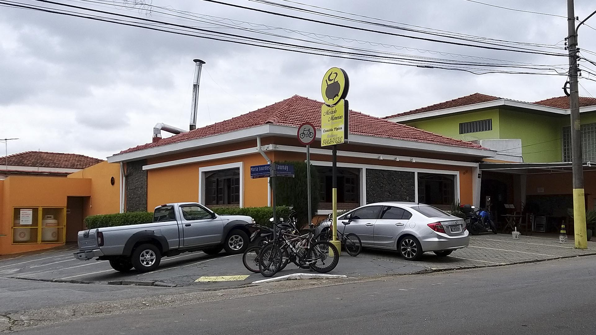
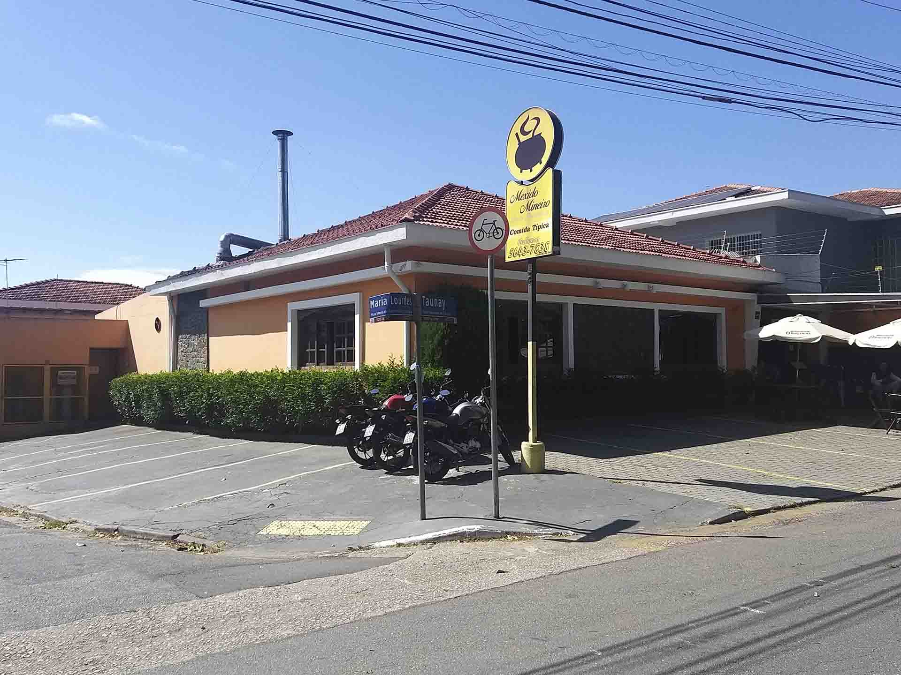
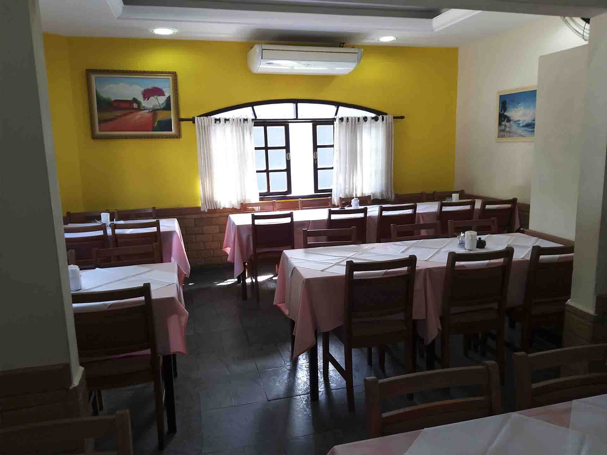
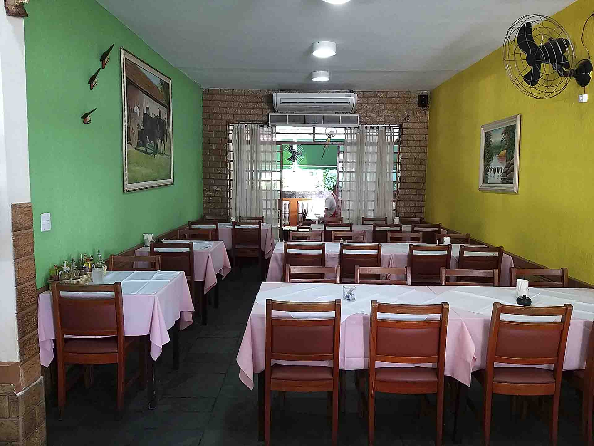
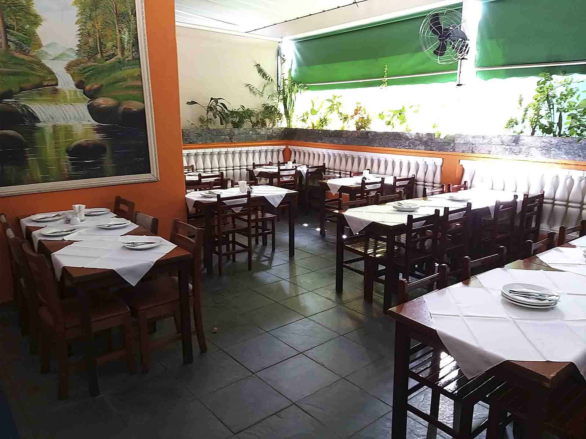
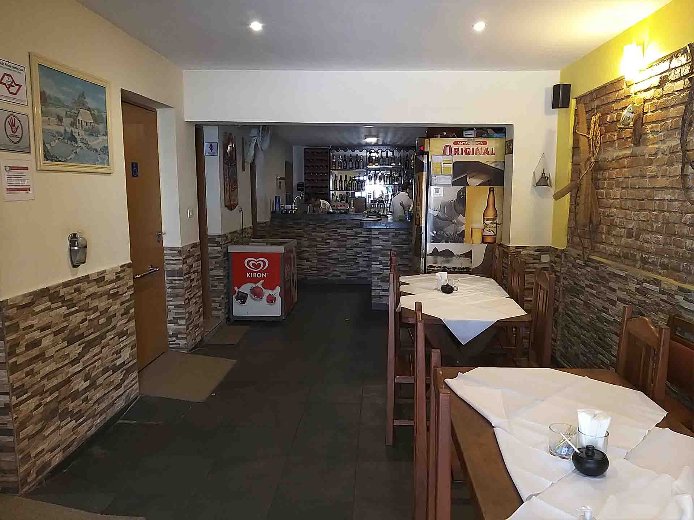

Quem somos:
O Mexido Mineiro nasceu em 2005 e, desde então, vem conquistando cada vez mais admiradores, pois possui o melhor sabor da culinária mineira da região sul de São Paulo.
Foi nesta boa localidade, próximo ao Clube Hípico de Santo Amaro, que dois amigos, o Sr. Geraldo e o Sr. Cabral, resolveram juntar seus talentos e concretizar seus sonhos: abrir um restaurante de comida típica mineira, mas que também fosse um ponto de encontro de amigos e famílias.
O restaurante possui tudo o que é preciso para um bom momento de descontração: comida gostosa, bebidas geladas, e um ambiente aconchegante, pronto para receber quem quiser conhecê-lo!
Unidade: Vila Cruzeiro
    Atualmente, o Mexido Mineiro dispõe de apenas uma unidade, localizado no bairro Vila Cruzeiro, ao lado do Clube Hípico de Santo Amaro.
Esta unidade oferece de tudo! Uma localização tranquila e de fácil acesso, ambientes aconchegantes que relembram muito bem o tão amado Estado de Minas Gerais, acessibildade, um espaço amplo para toda e qualquer quantidade de pessoas que te acompanhe, além de funcionários bem instruídos e prontos para atendê-lo!
Trabalhamos no formato à la carte, com pratos que servem de duas à três pessoas com toda a qualidade que somente uma casa mineira como o Mexido Mineiro pode oferecer.
Venha nos visitar, ou se preferir, você também pode pedir para delivery ou realizar a retirada no próprio estabalecimento! (consulte Contatos)
Rua Visconde de Taunay, 1020
Vila Cruzeiro, São Paulo - SP
CEP: 04726-011

Aceitamos todos os tipos de cartões de débito e crédito, e também a vasta maioria dos Vouchers de refeição.
Desenvolvido por: Gustavo Silva de Oliveira